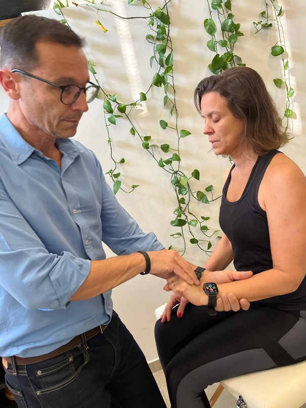
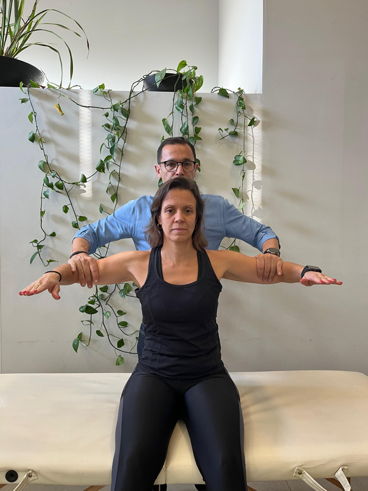
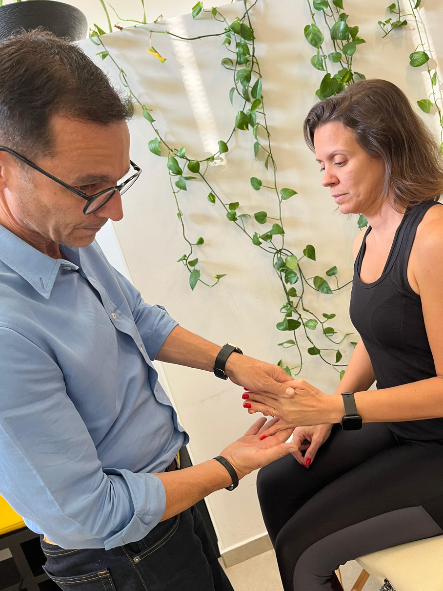
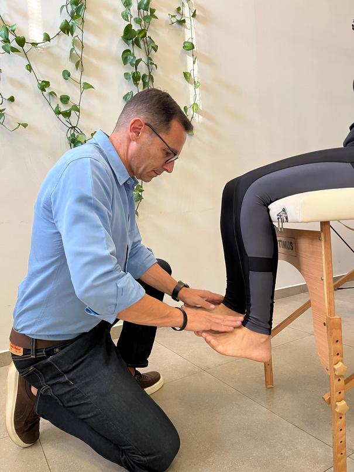
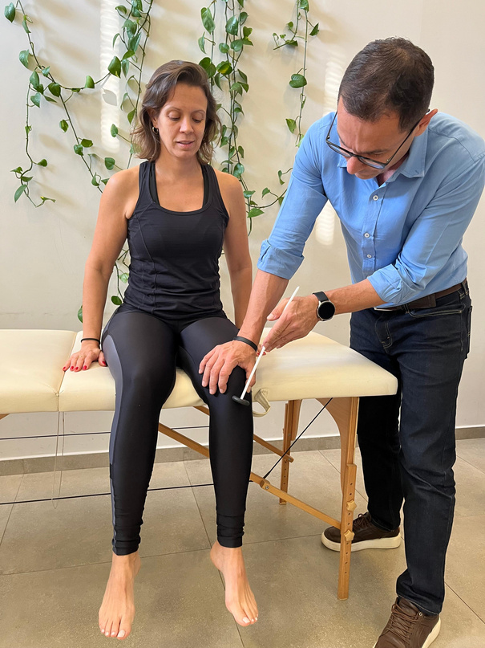
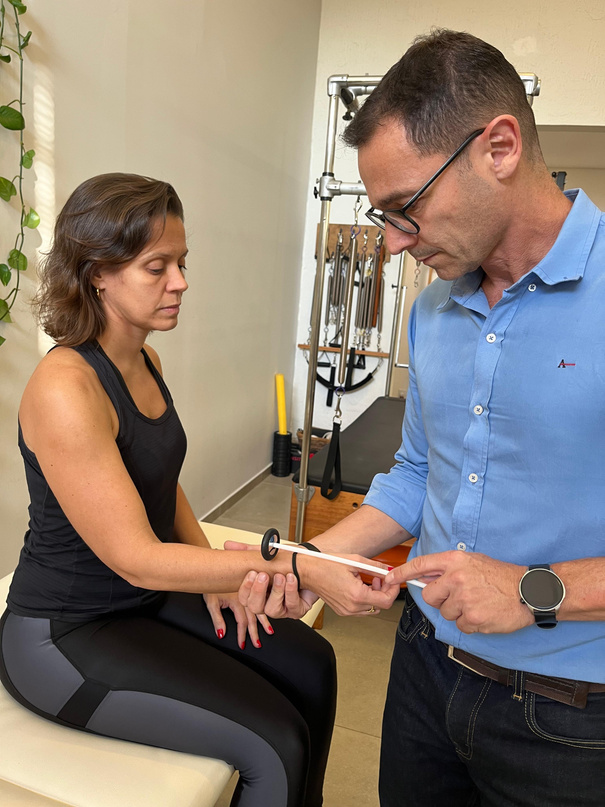
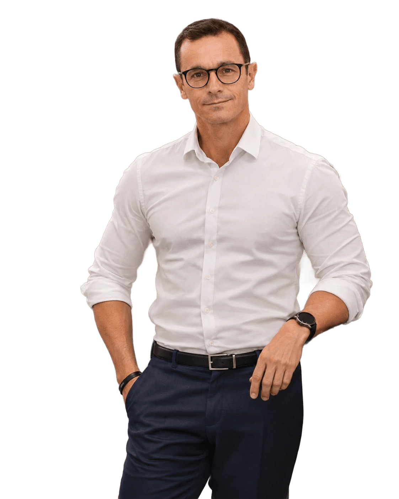

Ficha do caso
- Queixa
- O que o paciente relata
- Fenótipo
- Qual dor predomina no caso
- Irritabilidade
- O quanto o quadro tolera
- Decisão
- O que fazer primeiro e por quê
- Desfecho
- Como o caso evoluiu
Na Biblioteca de casos clínicos, o Gunther Löffler destrincha cada caso do início ao fim e explica o raciocínio por trás de cada decisão.
Pagamento seguro pela Hotmart.

O paciente melhora por três dias e volta tudo.
Você testa uma técnica, depois outra, e perde o controle do caso.
Você sabe o que fazer. Falta saber por que fazer agora.
O problema não é a técnica. É a condução.
Cada aula parte de um paciente. O Gunther mostra a avaliação, interpreta os sinais, classifica o caso e explica a decisão de condução, no mesmo raciocínio que usa no consultório.





O paciente chega embaçado. Você ouve a história como o Gunther ouve.
O que o caso realmente é. Sinais que passavam despercebidos ficam nítidos.
Fenótipo predominante e irritabilidade definem o que pode ser feito.
A decisão e o porquê: o que fazer primeiro e o que esperar da resposta.
Como fechar o caso e o que revisar para não perder o controle.
Cada caso tem uma ficha e uma cor. Você encontra o que precisa e acompanha o raciocínio no mesmo formato, aula após aula.
EstruturaTecido, carga e mecânica.
FiaçãoNervo, trajeto e neurodinâmica.
AlarmeSensibilização e dor sem lesão aparente.

“Eu também já fui o fisioterapeuta inseguro que não conseguia resolver os casos.”Gunther LöfflerFisioterapeuta e criador do método CSC, Clínica Sob Controle. Transformou insegurança clínica em clareza e hoje ensina outros fisioterapeutas a conduzir casos complexos com raciocínio.
Casos difíceis deixam de assustar quando existe clareza clínica.
Você será direcionado para o pagamento seguro da Hotmart.